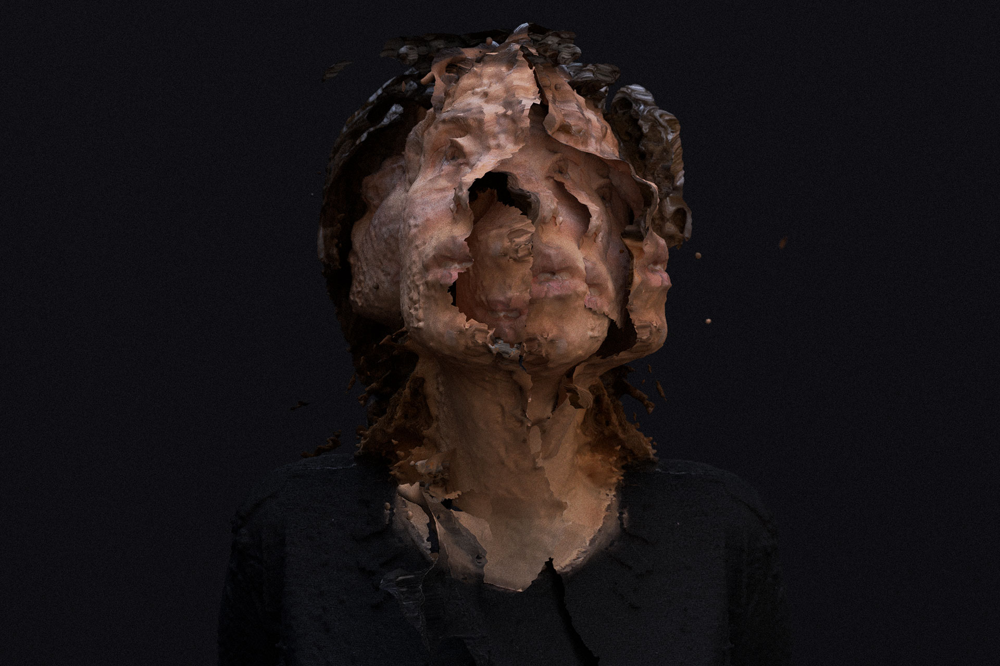

YOU
Digital Art / Photogrammetry

This piece delves into the disintegration of identity through layers of distortion and reconstruction. The human figure, once whole, is now fragmented and duplicated, suggesting a state of flux where the boundaries between the self and its representations blur.

It is as if the subject is being pulled apart and pieced back together simultaneously, trapped in an endless loop of transformation. This disassembly, both organic and mechanical, speaks to the fragility of the human form in a world dominated by technology.

Through this work, the human condition is portrayed as one of perpetual deconstruction and reformation, a commentary on the transient nature of identity in an age where digital and physical realities collide.
